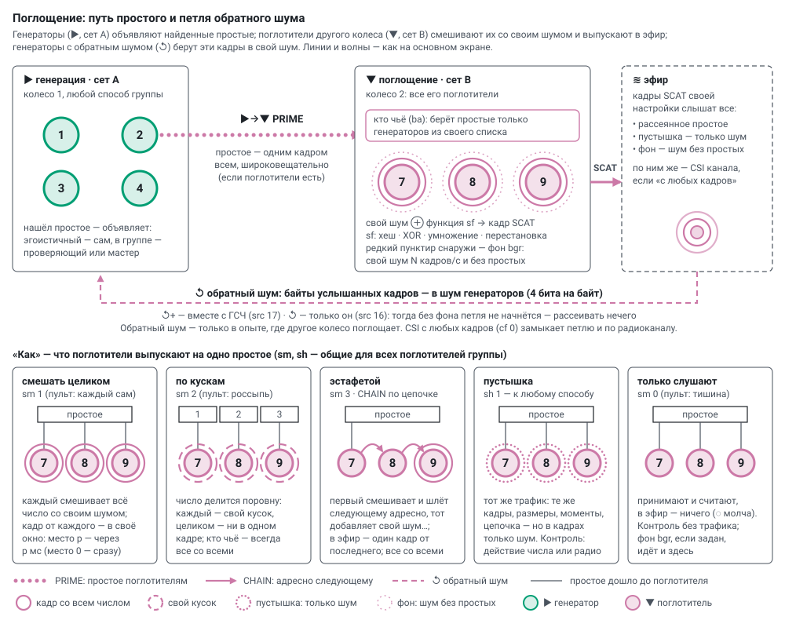

Absorption: absorbers (set B) — how it works and what we measure
English translation of docs/scatter.md — the Russian original is the source of truth. Labels inside the diagrams are in Russian.
The prime_lab firmware is the same on every board, and the role changes without reflashing: ▶ generation (set A) or ▼ absorption (set B); modules group.cpp and prime_lab.ino. On the main screen the role of a wheel is set by the run parameter "emission / absorption" (W1 ▶ · W2 ▼ — wheel 2 absorbs the primes of wheel 1, modes.md), the way — by the "absorption" card, rows "who takes whose" and "how". The absorbers of the other wheel join the generators' group (for a wheel with subgroups — the first by letter) and hear only the primes of their group: a foreign settings number is not accepted.


1. The path of a prime#
- A generator that finds a prime announces it with one broadcast PRIME frame: a selfish one — itself, in a group — the tester (one number for all — the master). They announce only if the group has absorbers; if the queue is busy, the prime is not announced (
adrop). - An absorber takes the prime if the generator is in its "who takes whose" list (
ba), and mixes it with its own noise using its function (sf). - It emits the result into the air as SCAT frames — according to the way "how".
- Generators with the ↺ "reverse noise" source take the bytes of these frames into their noise — a loop through the air (§ 4).
2. Who takes whose (ba — each absorber has its own)#
ba — generator numbers from the registry (a generator signs PRIME with its number); empty — all of them. The main screen computes each absorber's list from the option of the "who takes whose" row (generators and absorbers — by number):
| option | ba of the j-th absorber | why |
|---|---|---|
| all with all | empty — all | the main mode |
| pairs 1:1 | the j-th generator (round-robin if there are more absorbers) | its own pair; generators without a pair are a control inside the run |
| all — one | the first generator | everyone absorbs one, the other generators go unabsorbed |
| each — to one | generators i with i mod N = j | every prime is absorbed exactly once |
| half the wheel | the first half of the generators | one half of the wheel is absorbed, the other is not |
An absorber that gets nobody under the option is given ba=63 (no such number): it listens but takes nothing. In pieces and relay are always all with all: the number is divided between all absorbers. A prime from a generator that is not its own is not counted by the absorber and not included in "received" (prx).
3. How (sm, sh — shared by the group)#
| on the main screen | sm (console) | what each absorber does | what goes into the air | waves on the diagram |
|---|---|---|---|---|
| mix whole | 1 (each on its own) | mixes the whole number with its own noise | one frame from each per prime | solid |
| in pieces | 2 (scatter) | takes its own piece (the number is divided evenly) and mixes it | each sends its own piece; no frame holds the whole number | long dashes |
| relay | 3 | the first mixes and passes it on to the next by address (CHAIN), which adds its own noise, … | one frame from the last | a chain, waves at the last |
| placebo | 1 + sh 1 | the same traffic (frames, sizes, timing, chain), but the frames carry only noise | as for the way | dots |
| listen only | 0 (silence) | only receives and counts | nothing | none, «◌ молча» (silently) |
- Windows. With "mix whole" and "in pieces" all absorbers get the announcement at the same moment; the frame of the absorber in place p goes out no earlier than p ms later (place 0 — at once), otherwise broadcast frames without retries collide. The scattering delay is counted up to the absorber's own window.
- Control. Placebo (the
shtick for any way; on the main screen — for "mix whole") is identical traffic without the number, "listen only" — no traffic at all. Comparing "way" ↔ "the same, placebo" ↔ "listen only" separates the effect of the number itself from the effect of the radio traffic. - Background (
bgr, frames per second, console) — the absorbers emit their own noise at this rate, regardless of primes (primes go first). The loop needs it: without background there is nothing to scatter at the start. On the diagram — an outer sparse dashed ring around the absorber, for "listen only" as well.
Mixing functions (sf — each absorber has its own):
| function | what it does | is it reversible |
|---|---|---|
| hash | SHA-256 of (noise, block number, number), in 32-byte blocks | no |
| XOR | number XOR noise | only knowing the noise, and it is forgotten at once |
| multiplication | number × a random odd number from the noise modulo 2^length | only knowing the multiplier (it is forgotten too) |
| permutation | the bits of the number are permuted in an order set by the noise | only knowing the order |
The noise comes from the absorber's own sources (the source ticks are its own as well). It is gathered in advance in blocks: one block the size of the number (at least 32 bytes) per prime, up to 8 blocks in reserve. With a slow source (CSI, ADC, jitter) the absorber may fall behind: primes wait for noise ("waited for noise"), and no more than four waiting are kept — the next ones are skipped ("skipped").
4. The loop through the air: reverse noise#
Two paths, both switchable.
Frame contents — the ↺ "reverse noise" source (src bit 16; on the console — «Эфир сета B» (set B air), group «Петля» (loop)). The generator takes the bytes of the SCAT and background frames of its settings that it hears, crediting 4 bits per byte, and mixes them through SHA-256 like any source. On the main screen in "noise": ↺+ — mix into the RNG (src 17), ↺ — this alone (src 16): numbers are built only from what the absorbers emitted, A → B → air → A. This way the loop will not start without background — until a generator finds a prime there is nothing to scatter (the screen says "background needed"). Reverse noise is used only in a run where the other wheel absorbs, otherwise the run is skipped. Details on sources — randomness.md.
The radio channel — "CSI at the agents" (cf, shared, console):
- from any frames (default) — channel measurements also from the absorbers' frames: the loop through the physics of the channel is closed;
- only from router replies — what is scattered does not reach the generators' noise through CSI;
- only from set B frames — channel noise only from the absorbers' transmissions (the group link must be 24 or 6 Mbit/s: at 1 Mbit/s there are no channel measurements).
The radio energy cannot be removed this way: the absorbers' frames raise the noise of the generator's receiver (it is mixed into the chip RNG) and occupy the air. Only frequency (a separate channel for the absorbers — a second access point is needed), distance and the absorbers' transmit power remove it.
5. What we measure#
- generators: how many primes were announced (
ann), how many were not — queue busy (adrop), how many absorption frames were heard (heard); with reverse noise — how many bits per second from the air went into the noise and how many bytes did not fit into the reserve (bclost); - absorbers: how many primes were received (
prx), how many own frames emitted (stx) and separately — background frames (sbg), how many skipped (sdrop) and how many waited for noise (swait); in a relay — started (chs, by the first, which also passes to the second), passed on (chf, by middle links: with two absorbers there are none), emitted into the air (chd, by the last); delay from receiving the prime to its own frame (slat/sn); - everyone:
rxdrop— received ESP-NOW frames that did not fit into the event queue;etx— own frames: queued, dropped (queue full), not accepted by the radio, unacknowledged; - the rate of all this per second; totals — in the session totals ("scattering"); on the main screen — the labels of the "▶→▼" and "↺" bridges between the wheels and at each absorber.
6. Measurements (four boards, tools/multi_test.py)#
Compositions 3 A + 1 B, 2 + 2, 1 + 3, selfish and as a group, all ways and functions, silence with background, the loop, two A + B pairs at once.
- Announcements reach every absorber at 98–100 %; each emits exactly as many as it received; a relay through three — 761 started, 761 passed on, 761 emitted; silence — zero frames; background — exactly 20.0 and 50.0 frames/s.
- Windows: with three absorbers the delay to their own frame is 0.55 / 1.0 / 2.0 ms.
- The loop (generators take noise only from the absorbers' air, background 50/s) starts by itself: 0.6 primes/s per generator.
- Two A + B pairs running at the same time do not hear each other: announcements and frames are accepted only for their own settings; the absorbers' frames, each in its own window, are heard at 97–98 %.
7. ESP-NOW frames (tag W5)#
| type | from | to | contents |
|---|---|---|---|
| PRIME (7) | generator | everyone | length in bits, the prime; the prime's number at its author |
| SCAT (8) | absorber | everyone | kind (1 — mix whole, 2 — in pieces, 3 — relay, 4 — placebo, 5 — background), function, piece number and count, author of the prime, data |
| CHAIN (9) | absorber | the next absorber | relay step, author of the prime, intermediate value |